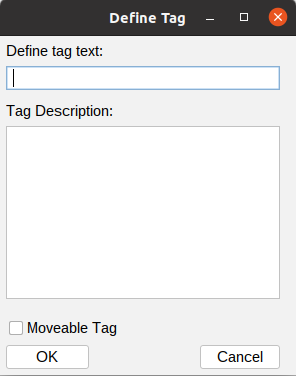

|
TagsWhat is a tag? A tag is just a string that you apply to a project branch that then allows you to create a read-only branch (using that tag). The read-only branch will see the project branch as it was at the time the tag was applied. By creating a tag, you have a sort of time-machine. You create a tag by opening the context menu on a branch, and choosing the 'Create Tag...' menu option. This will display the Define Tag dialog:  Use the 'Define tag text:' edit box to enter some meaningful string for the tag. I could be the name for a product release for example. Use the 'Tag Description:' text area to enter a longer description of the tag's purpose. If you want to be able to move the tag, enable the 'Moveable Tag' check box. If a tag is moveable, then the anchor commit of a read-only branch based on that tag can slide around the project's timeline. Tag Tips
|
| For the source code, see https://github.com/jimv39/qvcsos |